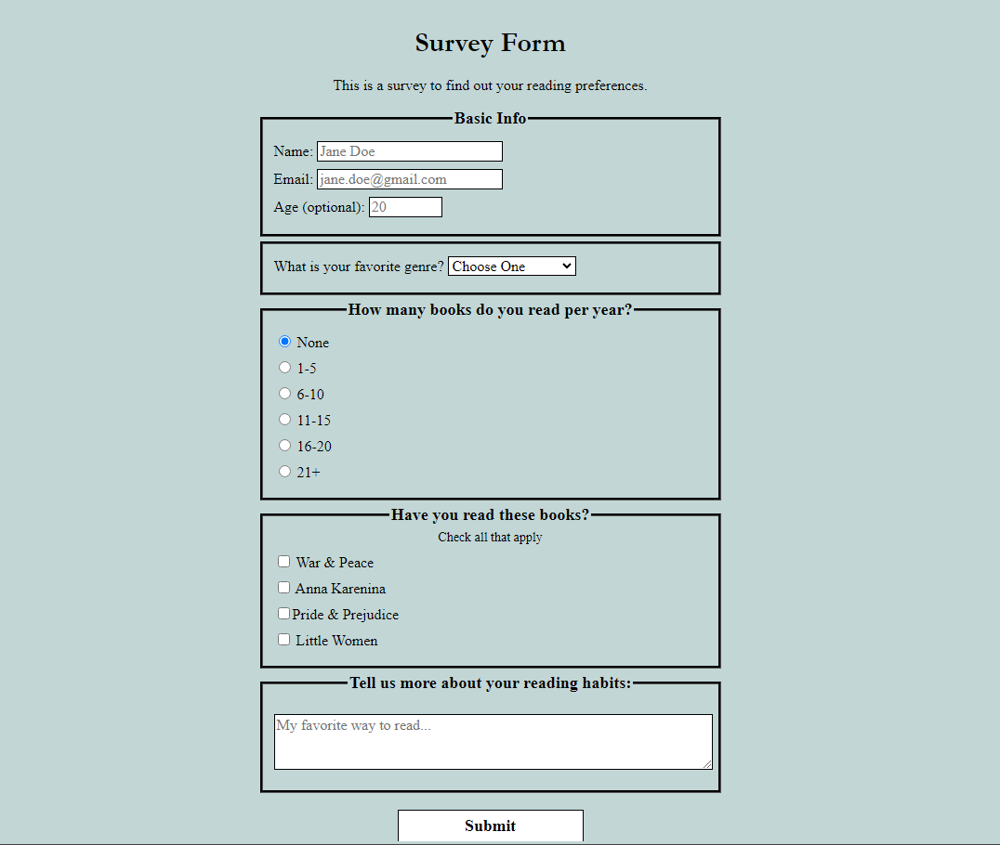
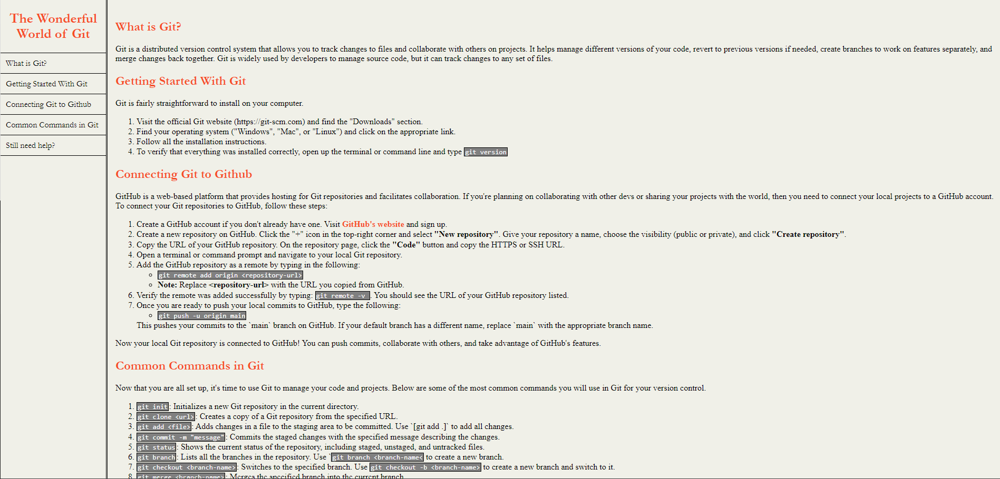

Coding Projects
Below are some coding projects I worked on for my Responsive Web Design certificate with freeCodeCamp.
Reading Preference Survey Form
This was my submission for the first project in the certificate program. The goal of the project was to create a simple HTML survey form that has multiple input fields (such as text, email, and number) and question types (such as checkboxes, dropdowns, and radio buttons).
Git Technical Documentation
This was my submission for the technical documentation project in the program. The goal of this project was to create a simple interactive page that utilized multiple sections/divs, media queries, and a fixed navbar that links to each section.